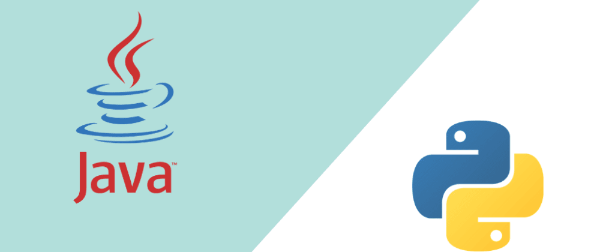

resumen
Desarrollador de software altamente competente y apasionado con dos(2) años de experiencia en diseño, desarrollo y optimización de soluciones tecnológicas innovadoras.
Experto en lenguajes de programación como java,phyton,c,c++,html, con sólidos conocimientos en desarrollo web y aplicaciones móviles.
Capaz de manejar proyectos de principio a fin, desde la concepción hasta la implementación y el mantenimiento.
Destaca por su habilidad para resolver problemas de manera creativa y su enfoque meticuloso en la calidad del código.
Amplia experiencia en colaborar con equipos interdisciplinarios para traducir requerimientos técnicos en soluciones funcionales y eficientes.
Posee un historial probado de entrega oportuna y exitosa de proyectos, demostrando una ética de trabajo excepcional y una búsqueda constante de la mejora técnica.
experiencia laboral
En estos momentos no tengo ninguna experiencia laboral
Habilidades técnicas
Lenguajes de programación (por ejemplo, Python, Java, C++, etc.).

Bases de datos (por ejemplo, SQL, MongoDB, etc.).
Tecnologías web (por ejemplo, HTML, CSS, JavaScript, etc.).
Herramientas y frameworks (por ejemplo, Git, React, Django, etc.).
Otras habilidades relevantes (por ejemplo, metodologías ágiles, control de versiones, etc.).
Educación
primaria en e colegio CED CALASANZ en el año 2008
bachiller en e colegio CED CALASANZ en el año 2014
Proyectos personales o de código abierto
proyectos personales ""pinup"" es una pagina web para una academia de baile en medellin
proyectos personales ""factura"" crear un programa donde realice todos los registros de una tienda como de entrada como de salida, ganancias y perdidas etc.
Certificaciones y capacitación adicional
por el momento no contamos con ninguna
idiomas
dos cursos aprobados por el SENA.